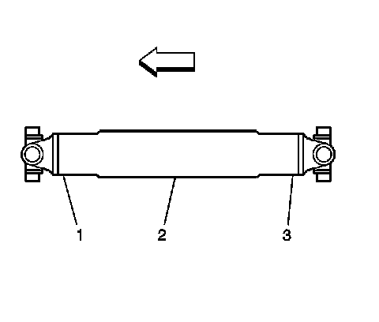
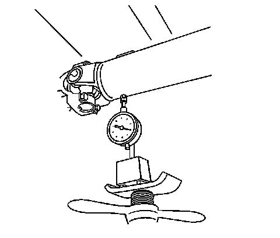
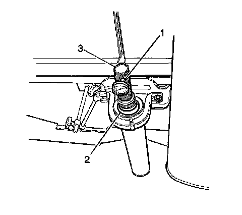

Propeller Shaft Runout Measurement
Propeller Shaft Runout Measurement
Tools Required
* J 7872 Magnetic Base Dial Indicator Set, or equivalent
* J 8001 Dial Indicator Set, or equivalent
Important:
* This measurement procedure is intended to measure propeller shaft runout for prop shaft systems with 2 or 3 U-joints only. This is not for prop systems with only 1 U-joint, or with only constant velocity (CV) joints, and/or coupler assemblies.
* When measuring runout of propeller shafts, do not include fluctuations on the dial indicator due to welds or surface irregularities.
* Always inspect the runout of any replacement propeller shaft.

1. Raise and support the vehicle. On vehicles with solid axles, ensure that the drive axle is supported at ride height - vehicle body supported by suspension components. Ensure the wheels are free to rotate. Refer to Lifting and Jacking the Vehicle (Service and Repair) .
2. Place the transmission in NEUTRAL.
3. Clean the circumference of the propeller shaft or shafts of any debris and/or undercoating along the front (1), center (2), and rear (3) positions.
4. Inspect the propeller shaft or shafts for dents, damage, and/or missing weights. Any propeller shaft that is dented or damaged requires replacement.

5. For 1-piece and 2-piece prop systems, mount the J 7872 , or equivalent, or the J 8001 , or equivalent, to the vehicle underbody or to a service stand positioned just clear of the U-joint yoke weld on the prop shaft.
6. Rotate the drive axle pinion flange, torque tube input flange, transmission output, or transfer case output flange by hand while taking runout measurements of the prop shaft or shafts. The prop shaft will rotate more easily in one direction than in the other. If necessary, the tire and wheel assemblies and even the brake caliper assemblies can be positioned and supported aside, or the brake drums can be removed from the drive axle to provide easier rotation of the prop shaft or shafts.
7. For all prop systems, measure and record the runout at each U-joint welded yoke location (1, 3) and at the center (2) of each prop shaft.
8. For 1-piece prop systems, proceed to step 10.

9. For 2-piece prop systems, perform the following inspections and measurement of the stub shaft:
1. Mark the mating position for each end of the prop shaft containing the slip yoke, then remove the shaft.
2. Inspect the prop shaft support bearing assembly (3) for damaged rubber components, worn bearing or bearings, or a damaged/cracked bracket which could be affecting the runout of the propeller shafts.
3. If the support bearing assembly exhibited any of these conditions, it requires replacement before proceeding.
4. Inspect the support bearing assembly (3) for loose or missing shims/washers if equipped. Reinstall correctly or replace any shims/washers as necessary to ensure proper alignment of the support bearing assembly.
5. Position the J 7872 , or equivalent (1), or the J 8001 , or equivalent (1), approximately 13 mm (1/2 in) from the end of the stub shaft (3).
6. Record the runout measurement at the stub shaft splines.
10. Compare the prop shaft runout measurements recorded to the runout tolerance specifications.
11. If the prop system has a U-joint at the transmission or transfer case output flange, and if the prop shaft runout measurements exceed runout tolerance specifications for that prop shaft at that location, or at the stub shaft if part of the front shaft, perform the following:
1. Inspect the deflection of the transmission or transfer case output shaft for indications of a worn or damaged bushing which could be affecting the runout of the prop shaft.
A leaking transmission or transfer case output shaft seal may be an indication of an output shaft bushing concern.
2. If the transmission or transfer case output shaft bushing is found to be worn or damaged, the bushing must be replaced before proceeding.
3. If the transmission or transfer case output shaft bushing was replaced; re-measure and record the runout of the prop shaft at the same locations measured previously.
4. Compare the prop shaft runout re-measurements recorded to the runout tolerance specifications.
5. If the prop shaft runout re-measurements still exceed runout tolerances at the same location or at the stub shaft, if part of the front shaft, the prop shaft requires replacement before proceeding. Check the runout of the replacement prop shaft.
6. If the transmission or transfer case output shaft bushing was not found to be worn or damaged, the prop shaft requires replacement before proceeding. Check the runout of the replacement prop shaft.
12. If the prop system has a U-joint at the drive axle pinion or torque tube input flange, and if the prop shaft runout measurements exceed runout tolerance specifications for that prop shaft at that location, or at the stub shaft if part of the rear shaft, perform the following:
1. Mark the mating position for each end of the prop shaft, then remove the shaft from the pinion input, or torque tube input flange.
2. Rotate the shaft 180 degrees from its original position.
3. Reinstall the shaft to the pinion or torque tube input flange.
4. Re-measure and record the runout of the shaft at the same locations measured previously.
5. Compare the shaft runout re-measurements recorded to the runout tolerance specifications.
6. If any of the runout re-measurements still exceed runout tolerances, perform the following:
1. Inspect the pinion or torque tube input flange runout to determine if it is affecting the runout of the prop shaft. Refer to the appropriate procedure: Torque Tube Input Flange Runout Measurement (Torque Tube Input Flange Runout Measurement) , Pinion Flange Runout Measurement (Pinion Flange Runout Measurement) , or Differential Pinion Input Shaft Runout Measurement (Differential Pinion Input Shaft Runout Measurement) .
2. If the pinion or torque tube input flange runout exceeds runout tolerances, the flange must be re-indexed or replaced to bring the runout within tolerances before proceeding.
3. If the pinion or torque tube input flange was re-indexed or replaced, return the prop shaft to its original relationship when reinstalling the shaft to the flange.
4. If the first measurement of pinion or torque tube input flange runout was within tolerances, the prop shaft requires replacement. Check the runout of the replacement prop shaft.
5. If the pinion or torque tube input flange was re-indexed or replaced, re-measure and record the runout of the shaft at the same locations measured previously.
6. Compare the shaft runout re-measurements recorded to the runout tolerance specifications.
7. If any of the runout re-measurements still exceed the runout tolerances, remove and rotate the shaft 180 degrees from it's original position to the pinion or torque tube input flange that has been re-indexed or replaced.
8. Reinstall the shaft then re-measure and record the runout of the shaft at the same locations measured previously.
9. Compare the shaft runout re-measurements recorded to the runout tolerance specifications.
10. If any of the shaft runout re-measurements still exceed the runout tolerances, the shaft requires replacement. Check the runout of the replacement prop shaft.
13. For 2-piece prop systems; if the prop shaft runout measurements at the welded yoke mating to the slip yoke exceed runout tolerance specifications for that prop shaft at that location, perform the following:
1. If the stub shaft is keyed to ensure proper alignment of the slip yoke, then the prop shaft requires replacement.
2. If the stub shaft is not keyed, mark the mating position for each end of the prop shaft, then remove the slip yoke from the stub shaft.
3. Rotate the shaft 180 degrees from it's original position.
4. Reinstall the slip yoke to the stub shaft.
5. Re-measure and record the runout of the shaft at the welded yoke to slip yoke location.
6. Compare the shaft runout re-measurements recorded to the runout tolerance specifications.
7. If the prop shaft runout re-measurements still exceed runout tolerances at the welded yoke mating to slip yoke location, the prop shaft requires replacement. Check the runout of the replacement prop shaft.